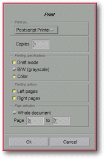

<!-- Documentation Xclamation (c)1994-2000 AXENE contact axene@axene.org>
<html>

<head>
<title>Print</title>
</head>

<body BGCOLOR="#FFFFFF" BACKGROUND="Images/back.gif" TEXT="#000000">

<p ALIGN="right">  </p>

<p><br>
<br>
The <i>&quot;print&quot;</i> dialog box selects printing parameters before launching a
printing. Printing is carried out on the active document and is executed solely in
PostScript®. <br>
<br>
</p>

<hr>

<p align="center"><br>
 <br>
<small><i>Screen shot: Print dialog box </i></small></p>

<p><br>
</p>

<hr>

<p><br>
</p>

<h3>Upper portion of the dialog box:</h3>

<ul>
  <li><a NAME="printer_list">The <i>&quot;Print to...&quot;</i> roll-down menu <b>selects a
    printer</b> from those defined in the </a><a HREF="ConfigPrinter.html">configuration files</a>
    to be used to print the current document. The list contains an option titled <i>&quot;File&quot;</i>
    which, if chosen, permits <b>printing to a file</b>. The filename will be chosen in the '<a HREF="Box_File_Selectors.html#fs_print_in_file">Printing to a file...</a>' file selector
    after closing the current dialog box. <br>&nbsp;</li>
  <li><a NAME="nb_copy_textfield">The <i>&quot;Number of copies&quot;</i> text field <b>specifies
    the number of copies</b> of a document or part of a document to be printed. </a><br>&nbsp;</li>
  <li><a NAME="draft_mode_toggle">The <i>&quot;Draft mode&quot;</i> <b>prints pages sans image</b>.
    Because images tend to print slowly, sample mode can more rapidly print the rough draft of
    a document to verify, for example, its page layout. Images will be replaced by an empty
    frame. </a><br>&nbsp;</li>
  <li><a NAME="nb_mode_radio">The <i>&quot;B/W (grayscale)&quot;</i> button <b>prints in black
    and white</b>, or more precisely, in levels of gray. All the colors used in the document
    will be transformed to levels of gray before printing. This mode should be chosen when
    printing to a black and white printer because the size of these printing specifications is
    less cumbersome and processing will be faster. Black and White mode and Color Mode are
    opposites. </a><br>&nbsp;</li>
  <li><a NAME="color_mode_radio">The <i>&quot;Color&quot;</i> button <b>prints in color</b>.
    This mode should be used only if printing in color to a color capable printer. </a><br>&nbsp;</li>
  <li><a NAME="left_page_toggle">The <i>&quot;Left Pages&quot;</i> button authorizes <b>printing
    of only the left pages</b> of a document. If this button is not engaged and the document
    is set in front/back or double page modes, the left-hand pages will not be printed. </a><br>&nbsp;</li>
  <li><a NAME="right_page_toggle">The <i>&quot;Right Pages&quot;</i> button authorizes <b>printing
    of the right pages</b> of a document. This button should only be de-activated if the
    left-hand pages are to be printed and the document was created in front/back or double
    page modes. If the left pages and right pages buttons are both de-activated, nothing will
    be printed. </a><br>&nbsp;</li>
  <li><a NAME="all_document_toggle">The <i>&quot;Whole document&quot;</i> button <b>prints the
    entire document</b>. Activating this button automatically displays the first and last page
    numbers in the Page text fields. </a><br>&nbsp;</li>
  <li><a NAME="page_from_to_textfields">The two text fields, <i>&quot;Pages&quot;</i> and <i>&quot;To&quot;</i>
    <b>select a set of page numbers to be printed</b>. The number in the first field must be
    set between 1 and the number in the second field. The number in the second field must be
    set between the number in the first field and the actual last page number of the document.
    Changing one of these two values will affect the state of the <i>&quot;Whole
    document&quot;</i> button. </a><br>&nbsp;</li>
</ul>

<p><br>
</p>

<h3>Lower portion of the dialog box:</h3>

<ul>
  <li><a NAME="button_ok"><i>&quot;Ok&quot;</i> confirms all printing parameters, closes the
    dialog box, and <b>launches the printing</b>. If the selected printer is File, the '</a><a HREF="Box_File_Selectors.html#fs_print_in_file">Printing to a file...</a>' file selector
    will open to choose the target filename; printing will then follow. <br>&nbsp;</li>
  <li><a NAME="button_cancel"><i>&quot;Cancel&quot;</i> <b>closes the dialog box</b> without
    printing. </a><br>&nbsp;</li>
</ul>

<p><br>
</p>

<hr>

<p ALIGN="right"></p>
</body>
</html>
